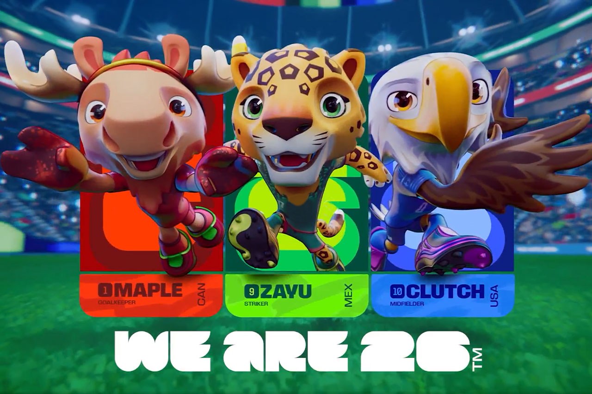

A Copa do Mundo é muito mais do que um torneio esportivo: é um evento capaz de unir nações, despertar
paixões e criar momentos que ficam marcados para sempre na história. A cada quatro anos, os melhores
jogadores do planeta entram em campo representando seus países em busca do troféu mais desejado do futebol.
Durante semanas, bilhões de pessoas acompanham cada lance, transformando a competição em um verdadeiro
espetáculo global.
Desde sua primeira edição, realizada em 1930, a Copa do Mundo se tornou o maior e mais prestigiado
campeonato do esporte. Ao longo das décadas, o torneio foi palco de partidas inesquecíveis, gols históricos
e conquistas que eternizaram seleções e jogadores. Cada edição escreve uma nova página dessa trajetória,
reunindo tradição, rivalidade, emoção e a esperança de milhões de torcedores que sonham em ver sua nação
alcançar a glória máxima.
Em 2026, a competição promete ser ainda mais grandiosa. Com um número recorde de seleções participantes e
jogos realizados em diferentes cidades da América do Norte, a Copa do Mundo oferecerá novas histórias,
grandes confrontos e emoções do início ao fim. Mais do que disputar um título, as equipes lutarão para
deixar seus nomes na história e inspirar futuras gerações. Afinal, a Copa do Mundo é o momento em que o
futebol mostra toda a sua força, provando que nenhuma paixão é capaz de unir tantas pessoas quanto o esporte
mais amado do planeta.